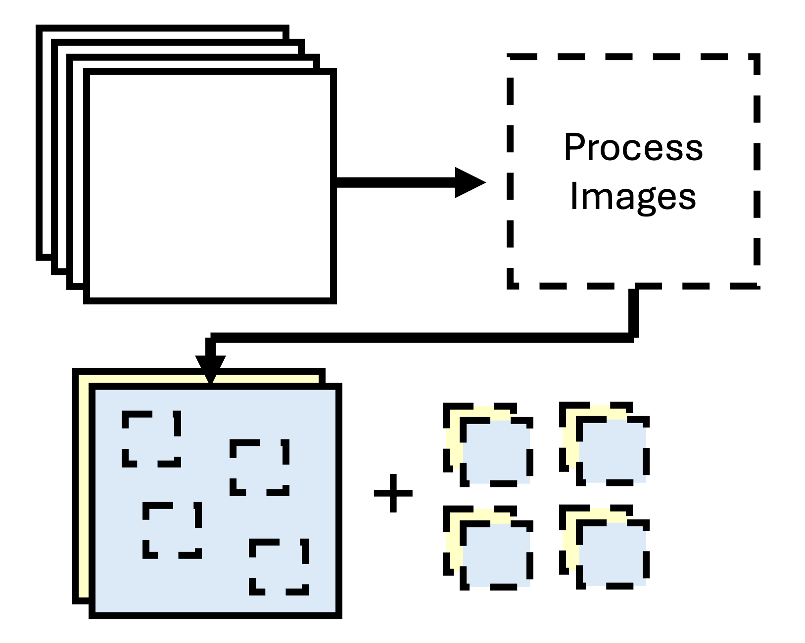
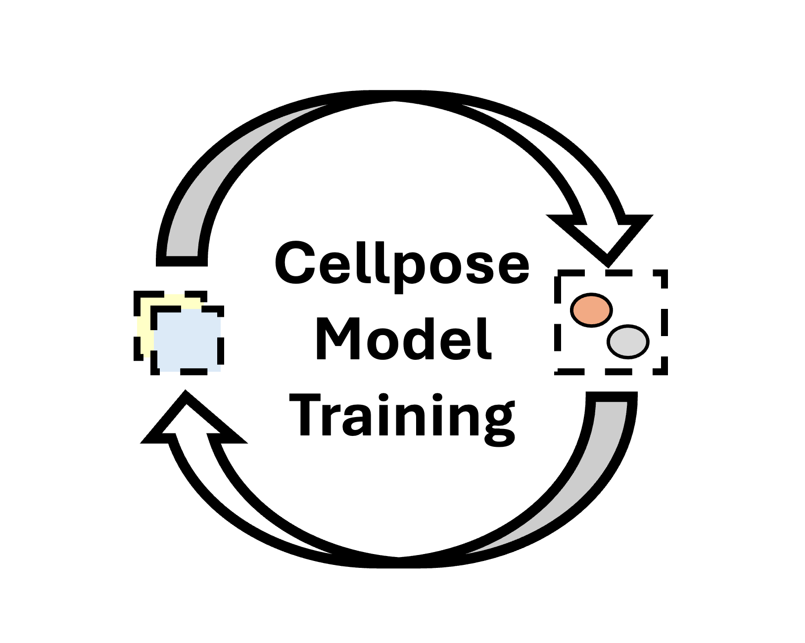
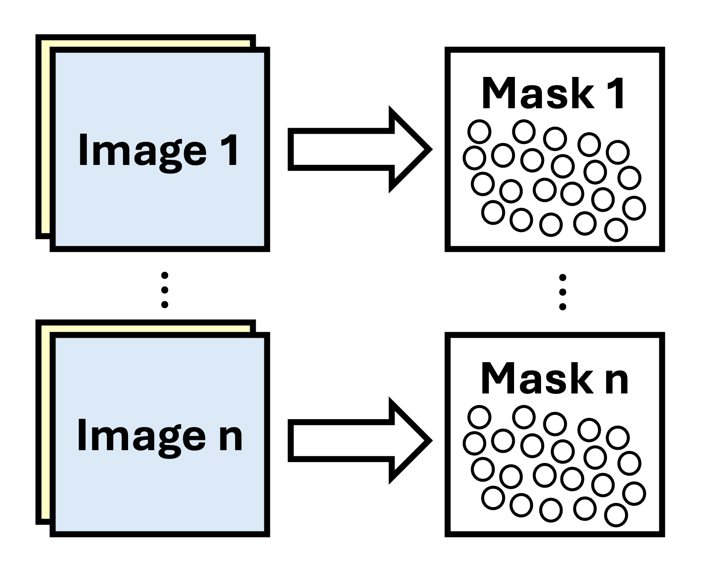
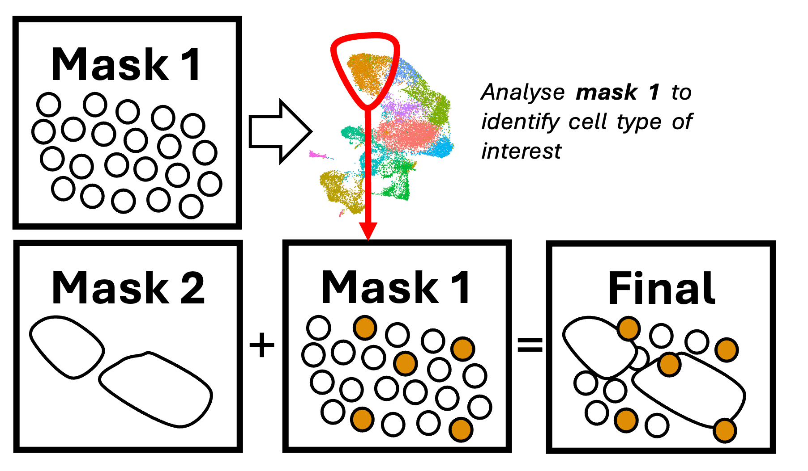

Last updated: 2026-04-08
Checks: 2 0
Knit directory: Xenium/
This reproducible R Markdown analysis was created with workflowr (version 1.7.2). The Checks tab describes the reproducibility checks that were applied when the results were created. The Past versions tab lists the development history.
Great! Since the R Markdown file has been committed to the Git repository, you know the exact version of the code that produced these results.
Great! You are using Git for version control. Tracking code development and connecting the code version to the results is critical for reproducibility.
The results in this page were generated with repository version e9fa943. See the Past versions tab to see a history of the changes made to the R Markdown and HTML files.
Note that you need to be careful to ensure that all relevant files for
the analysis have been committed to Git prior to generating the results
(you can use wflow_publish or
wflow_git_commit). workflowr only checks the R Markdown
file, but you know if there are other scripts or data files that it
depends on. Below is the status of the Git repository when the results
were generated:
Ignored files:
Ignored: .DS_Store
Ignored: .RData
Ignored: .Rhistory
Ignored: .Rproj.user/
Ignored: analysis/.DS_Store
Ignored: analysis/.RData
Ignored: analysis/.Rhistory
Ignored: analysis/adit/.DS_Store
Ignored: data/
Ignored: ignore/
Ignored: plots/
Ignored: workflow.R
Ignored: workflow.Rproj
Unstaged changes:
Modified: .gitignore
Note that any generated files, e.g. HTML, png, CSS, etc., are not included in this status report because it is ok for generated content to have uncommitted changes.
There are no past versions. Publish this analysis with
wflow_publish() to start tracking its development.
Cell Segmentation
Cell segmentation is the computational process of identifying and delineating individual cell boundaries within microscopy images, essentially teaching a computer to “see” where one cell ends and another begins. It is a foundational step in any imaging-based analysis pipeline, as all downstream measurements (transcript counts, protein expression, spatial relationships) are only as accurate as the segmentation that defines the cell units being measured. Poor segmentation directly propagates error: oversegmented cells artificially inflate cell counts and fragment expression profiles, while undersegmented cells conflate signals from neighbouring populations.
A persistent challenge is that generalised segmentation models, including those bundled in proprietary platforms like 10x Xenium Ranger, are typically trained on canonical cell morphologies: round, evenly-spaced cells in culture. In tissue, this assumption breaks down rapidly. Immune cells wedged between epithelial sheets, elongated fibroblasts, highly irregular tumour cells, and densely packed glomerular structures all violate the shapes these models expect. Indeed, 10x encourage resegmentation and have provided resources on how to approach this link The result is systematic segmentation failure in precisely the cell populations that are often most biologically interesting. Custom model training on tissue-specific imaging data, as implemented in this module, is therefore not merely an optimisation - it is often a prerequisite for biologically meaningful results.
We’ve developed this Cell Segmentation module that can be optionally used in several imaging pipelines, including Xenium, COMET, IMC, mIF, etc. In this version of the module, we have opted for the cellpose method, as it provides a user-friendly UI and pre-trained starting models for training.
Image Processing
Image Processing

Image processing can be a fairly manual process if done in ImageJ or
Qupath. It requires either a lot of point and clicking, or you require
some programming skills to write macros. Moreover, it can be
computationally slow/restrictive if the images are too large to open. As
a result, we’ve developed a python function that performs
the pre-processing required for cellpose. It currently processes images
in ~1 minute, which outperforms manual processing in ImageJ (estimated
to take about 15-20 minutes)
Cellpose allows for both a nuclei and a surface image. However, Xenium provides 4 images: DAPI, CD45/Ecadherin/ATP1A1, 18S, Vimentin/aSMA. Our function allows the user to select multiple surface stains to be combined into the single surface stain for segmentation, to provide as much data for a universal cell segmentation model. We also allow the user to select a lower resolution layer of the images, which can speed up the segmentation process. 10x benchmarks have indicated that reducing the resolution by one layer (from 0.2125µm per pixel to …µm per pixel) have minimal impact on segmentation, but speeds the process up 10 fold.
The output is then the segmentation-ready full image stack (full image segmentation - Step 3), and a series of random crops (model training - Step 2).
Cellpose Training
Cellpose Training

This step is optional, but allows the analyst to generate a custom segmentation model through cellpose. Cellpose provides an interactive UI, where the cropped images are drag-and-dropped into the application window. A pre-trained model can be used to start the training, and several settings can be adjusted, such as cell diameter. A starting cell mask is generated and displayed, and the user can delete and/or add additional cell masks. This is then used to train a model and apply to the next crop. This is iteratively performed until the model is satisfactory.
Bulk Segmentation
Bulk Segmentation

Whether using a pre-trained model or a customised model, this step points to the full-sized cellpose-compatible images and runs cellpose without the GUI to generate masks of the entire image, and iterate through each image.
The output would be a 16-bit .npy file per image. These
can then be used in Step 4 to regenerate the Xenium
outputs with the new cell segmentation.
Merge Masks
Merge Masks

In some cases, hypotheses involving complex tissue environments requires the segmentation of multiple cell types of varying shape, size and density. This can be quite challenging for methods like cellpose to effectively segment every cell type.
We therefore have the developed a method of merging two or more masks together. The challenge lies with choosing which mask to pull data from when pixels overlap, especially when you’ll likely have the same cell segmented in multiple masks (and we also want to avoid duplication). We can therefore analyse the masks themselves to identify privileged cell masks to preserve. For example, we might want the static mask to be of larger structures like muscle or epithelium; on the transfer mask, we might only want to preserve immune cells. Therefore, we analyse the transfer mask using our data analysis module and identify the identities of immune cells. When merging the masks, we replace the pixels of the static mask with “immune cells” from the transfer mask. We can also optionally choose to include cells that do not overlap with any cells in the static mask.